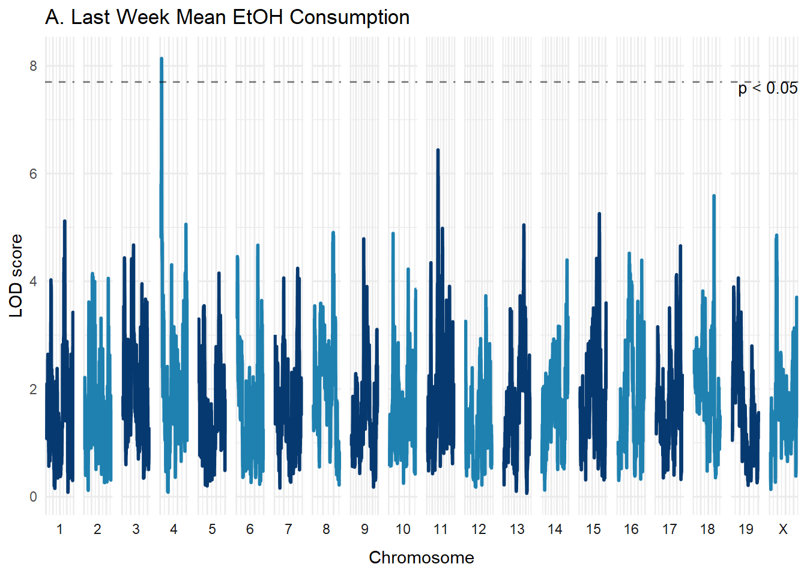
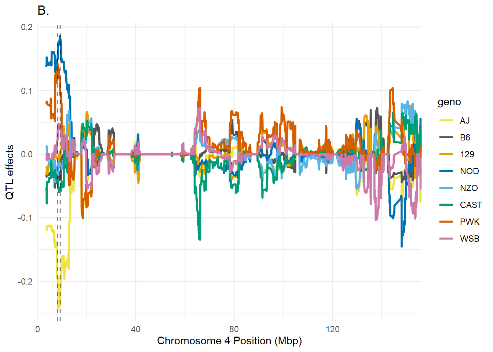
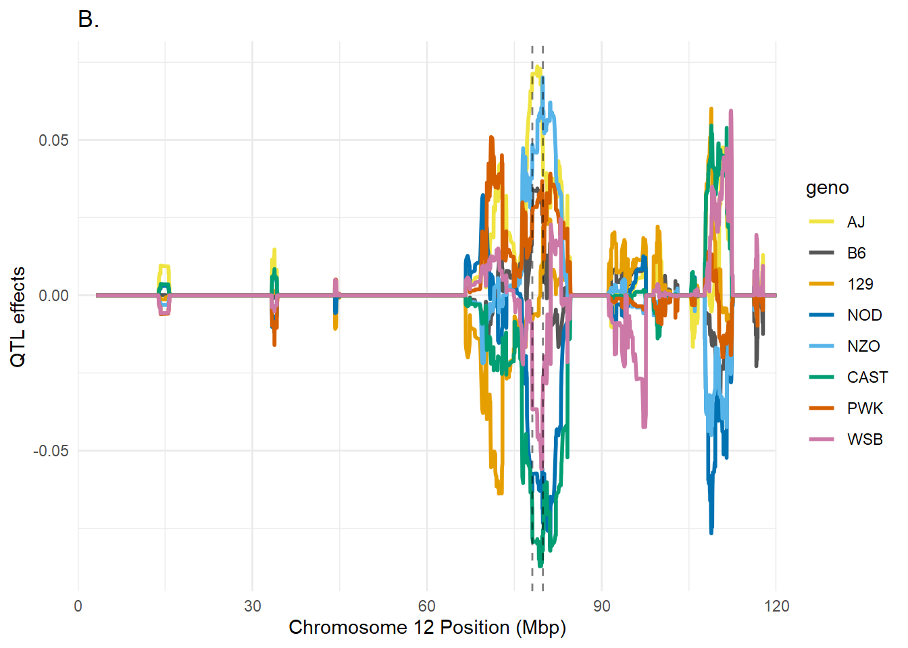
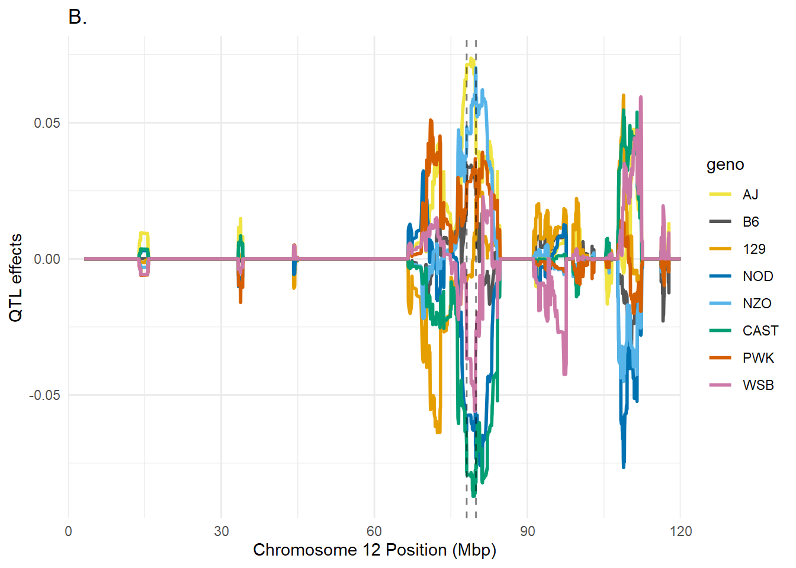
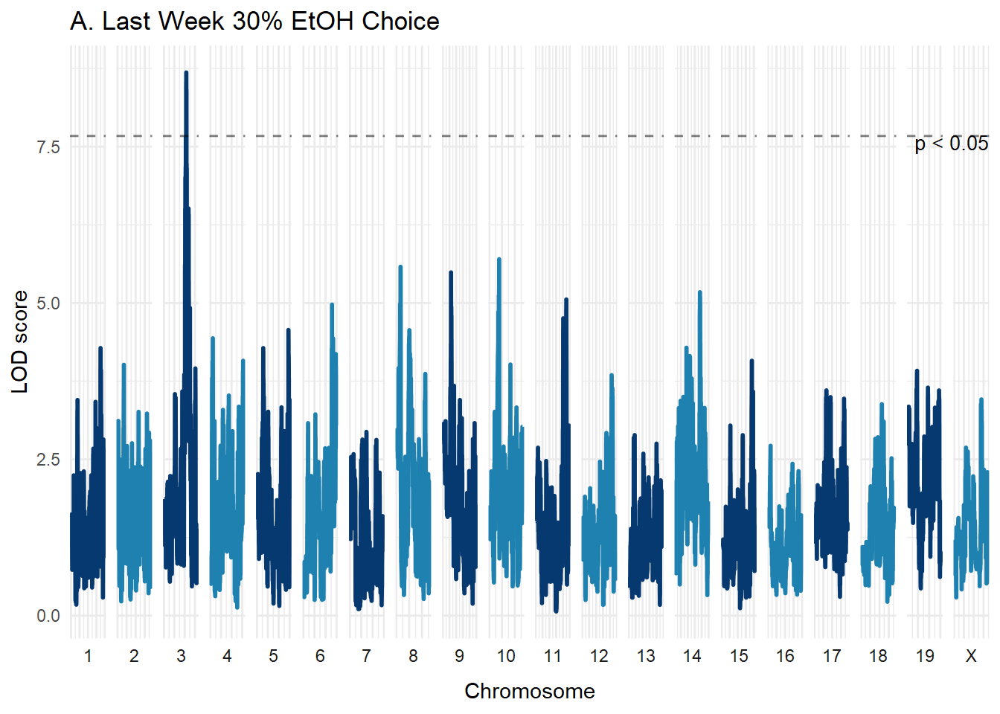
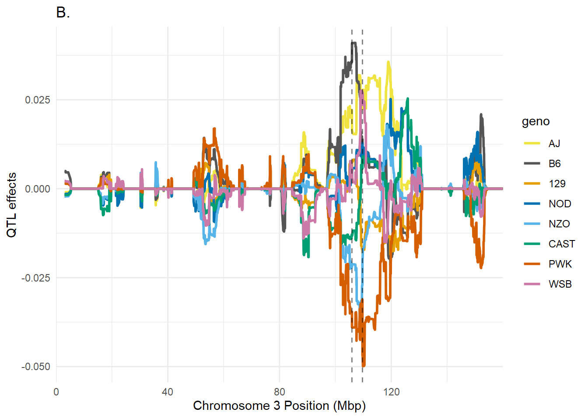

Supplemental Figures
Zachary Tatom, Michael Miles
2022-06-26
Supplemental Figures
Figure S1.
Figure S1. Diversity Outbred (DO) mice were exposed to five weeks of intermittent ethanol access (IEA) via 3-bottle choice. Mice were given access to ethanol on alternating 24-hour periods beginning during the dark cycle over the span of 5 weeks (A). Only data from the first 4 weeks of ethanol access were used in further analysis due to the presence of an anxiety-like behavioral assay at the start of week 5. During periods of ethanol access, mice were given two concentrations of ethanol (15%, 30%) in addition to water in order to identify mice which prefer stronger concentrations of ethanol (B). Tissue samples were collected for genotyping and RNA-seq at the end of week 5.

Figure S2. Behavioral QTL analysis for last week mean EtOH consumption identifies a significant bQTL on Chromosome 4. Behavioral quantitative trait loci (bQTL) analysis was carried out using genotype data and behavioral data from DO mice (n = 636) over four weeks of IEA via three-bottle choice using R/QTL2 software. Behavioral data were log- (for consumption and choice phenotypes) or square-root- (for preference phentoypes) transformed for normalization. Significance thresholds of p < 0.05 were identified for each phenotype using 1000 permutations; this threshold is denoted with a dashed horizontal line. A significant QTL was identified for last week mean EtOH consumption on chromosome 4 (A; LOD = 8.23, position = 8.41 Mbp, 95% Bayesian CI = 8.24-9.28 Mbp). Founder strain effects were then estimated using Best Linear Unbiased Predictors (BLUP); for the bQTL CI on chromsome 4 (denoted by dashed vertical lines), the presence of A/J alleles (yellow) was estimated to reduce last week mean EtOH consumption, whereas the presence of NOD (blue) or PWK (red) alleles were estimated to increase last week mean EtOH consumption (B).
 

Figure S3. Behavioral QTL analysis for first week EtOH preference compared to water identifies a significant bQTL on Chromosome 12. bQTL analysis was carried out on derived phenotypes including EtOH preference, defined as total EtOH consumed divided by total fluid intake. Significance thresholds of p < 0.05 were identified for each phenotype using 1000 permutations; this threshold is denoted with a dashed horizontal line. A significant QTL was identified for first week mean EtOH preference on chromosome 12 (A; LOD = 7.52, position = 79.35 Mbp, 95% Bayesian CI = 78.09-79.91 Mbp). Founder strain effects were then estimated using Best Linear Unbiased Predictors (BLUP); for the bQTL CI on chromsome 4 (denoted by dashed vertical lines), the presence of A/J (yellow) or NZO (light blue) alleles was estimated to increase first week mean EtOH preference, whereas the presence of CAST (green) or NOD (blue) alleles were estimated to decrease first week mean EtOH preference (B).

Figure S4. Behavioral QTL analysis for last week 30% EtOH choice compared to 15% EtOH identifies a significant bQTL on Chromosome 3. bQTL analysis was carried out on derived phenotypes including 30% EtOH choice, defined as 30% EtOH consumed divided by total EtOH consumed. Significance thresholds of p < 0.05 were identified for each phenotype using 1000 permutations; this threshold is denoted with a dashed horizontal line. A significant QTL was identified for last week mean 30% EtOH choice on chromosome 3 (A; LOD = 8.63, position = 108.22 Mbp, 95% Bayesian CI = 105.92-109.69 Mbp). Founder strain effects were then estimated using Best Linear Unbiased Predictors (BLUP); for the bQTL CI on chromsome 4 (denoted by dashed vertical lines), the presence of A/J (yellow) or C57/BL6 (gray) alleles was estimated to increase last week mean 30% EtOH choice, whereas the presence of PWK (red) alleles were estimated to decrease last week mean 30% EtOH choice (B).